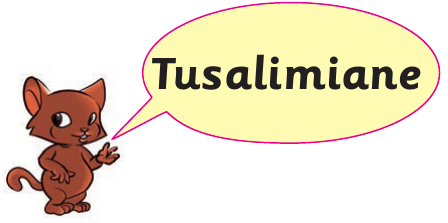
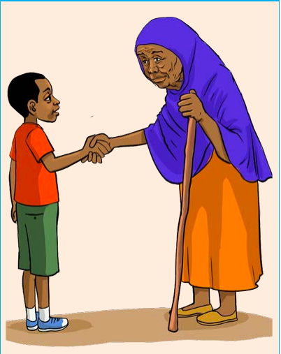

Sura ya Tatu
Matendo yenye maadili

Mhusika mdogo mwenye rangi ya kahawia amesimama kando ya kiputo cha maneno chenye ujumbe: Tusalimiane.
Zoezi la 1
Zoezi la kwanza
Eleza kinachofanyika katika picha (a) na (b).
Msichana na mvulana wamesimama wakitazamana na kushikana mikono wanaposalimiana.
(a) Kinachofanyika

Mtoto anamsalimia bibi mwenye fimbo kwa kushikana naye mkono.
(b) Kinachofanyika
Futa majibu
22